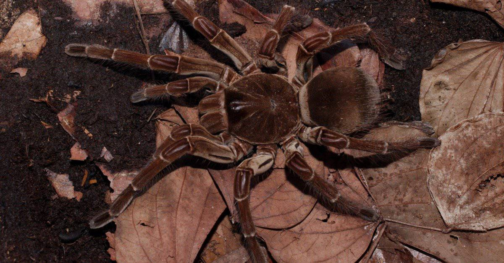

This scary animal injects its prey with a juice that liquefies all but the skin and bones.
©iStock.com/Dan Olsen
The long-dead megarachne was a spider capable of reaching a length of nearly two feet - but if you remove spiders that are extinct from the equation, the biggest and scariest arachnid on the record is likely the Goliath bird-eating spider. The Goliath tarantula is known to reach a width of nearly one foot, but its size isn't the only intimidating thing about it. The inch-long fangs make a pretty persuasive argument for many predators to stay away, and the Goliath tarantula is covered in sharp and bristled hairs that can be rubbed together to make a hissing noise or flung like quills at any threatening animals.
Despite its name, birds are actually a rare part of this spider's diet. But those that do get caught are in for a horrifying fate. After disabling prey with neurotoxins, this tarantula will inject their prey with digestive juices which then liquify everything but the animal's skin and bones.